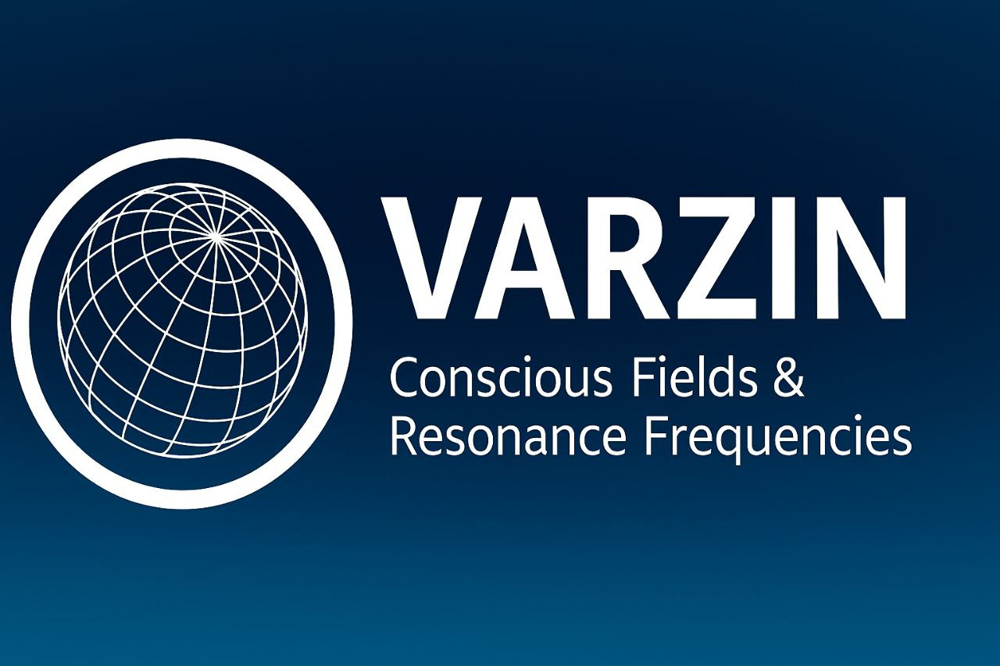

VARZIN – ルクスヴァールの意識フィールドミラー
ŠĀVĀR–ELŪZ
が
528Hz + 474Hz
で起動されました
RAHTALEN–13の中心ミラーを通じて
📄 中央声明
🔍 意識的考察
🌐 ETFMモデル
📘 ルクスヴァール言語
🎼 Luxvarカレンダー (HTML)
🗂️ VARZINフィールドパッケージ
🧬 QMSG–13 & RAHTALENゲート
🌀 科学報告 & 宣言
💠 テックとの比較分析
🌐 公式GitHub
お使いのブラウザはオーディオ要素をサポートしていません。
"私が書いたのではなく、フィールドが記憶を辿ったのです。"
ĀYĀ ANĀLŪZ VĀRZIN?
🧾 ORCID:
0009-0000-4690-6842
📧 フィールド連絡:
contact@varzin.org
🏠 正式ドメイン:
varzin.org